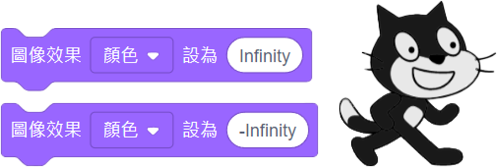
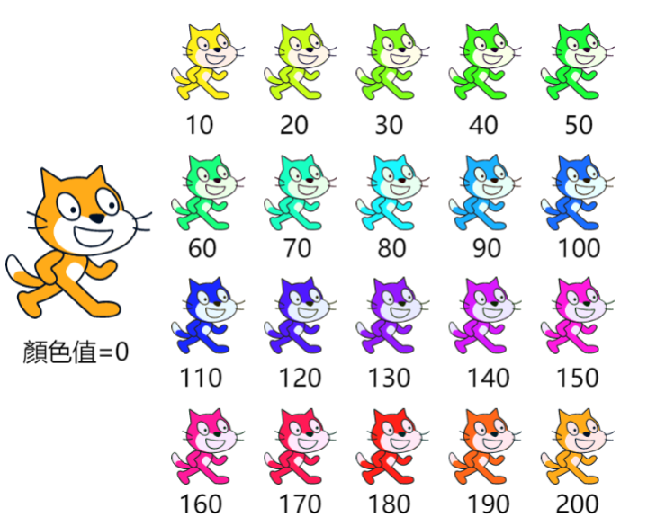

|
|
|---|
 圖像效果-顏色
圖像效果-顏色
〈圖像效果〉積木中的「顏色」效果，是用來改變角色（背景）外觀的顏色。
它與「畫筆顏色」的計算表達方式有點不同，共可呈現200種不同的顏色（0～199），「真實」色彩效果等於已儲存的效果＋所添加的色彩效果值的一半。在理論上，當效果值是200時，意味著它不會執行任何改變，因為添加數字200的一半會得到100，添加100的結果會使顏色值返回到其原始值，然而實際上當值是200時，也有稍許變色，無法回到原始顏色。
因此，圖像效果的顏色值範圍應該是0～199，超過後會再重新計算起，如果要讓圖像回到原始顏色，唯有將顏色值設為「0」或是使用〈清除圖像效果〉積木，才能做到。
而這種方式的改變，對黑、灰、白三色是沒有明顯的作用，可以改用「亮度」效果值來對這三色作明暗度的改變。
圖像的顏色效果有一個特例，就是當你將效果值設為Infinity或-Infinity時，圖像會失去顏色的飽和度變成灰色。
用途:
①在專案中隨時改變角色或背景的顏色
②以不同顏色表示不同事物
③配合〈蓋章〉積木藝術創作
④製造閃爍效果
⑤營造氛圍
③畫彩虹

